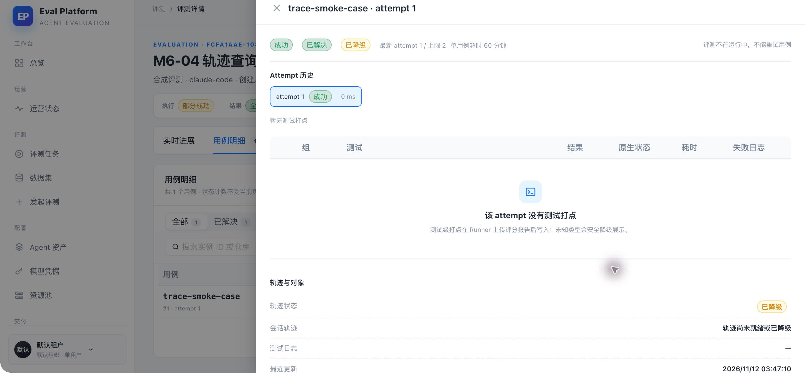
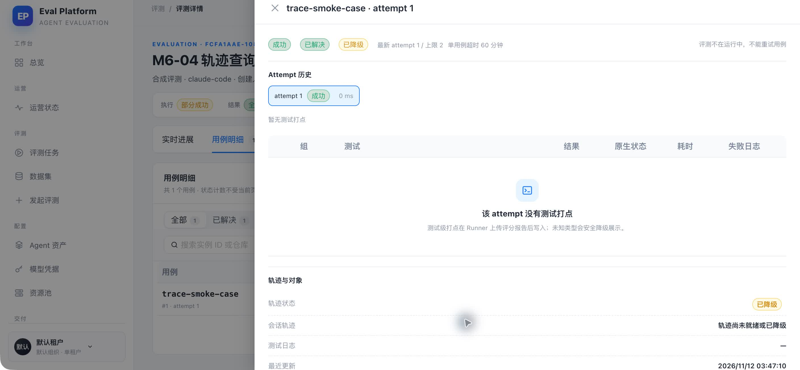
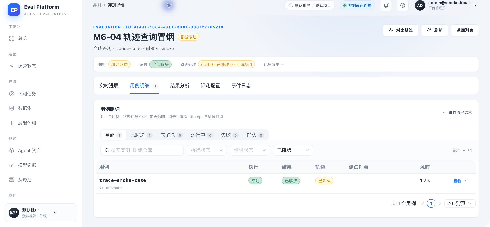

- Commit
- e2a3ac7
- PR
- #167
- Runtime
- claude-code 2.1.278
- Database
- isolated SQLite
- Object store
- local SigV4 URL + HTTPServer
- Viewer
- blocked by #94; current case detail used
Computer Use + API integration
M6-04 轨迹查询 API 与受控原件访问 smoke
在隔离 SQLite、真实 FastAPI 与本机对象存储链路上验证轨迹状态、attempt 树、游标分页、降级质量、管理员签名下载和 no-store 响应。现有前端尚未交付 #94 三栏查看器，因此 GUI 覆盖当前可达的评测详情与轨迹状态入口，查询契约由真实 API 补证。
3GUI 截图
15定向 API 测试
7关键 API 场景
0新增 smoke 缺陷
Environment and Artifact
2026-11-12 · macOS · Google ChromeScenario Matrix
7 pass| # | 场景 | 结果 | 断言 | 证据 |
|---|---|---|---|---|
| 01 | 登录与评测详情 | PASS | 管理员登录后进入隔离评测，页面显示部分成功与轨迹处理计数。 | 03-degraded-filter-results.jpeg |
| 02 | 降级状态可见 | PASS | 用例详情显示轨迹状态“已降级”，不会伪装成可用轨迹。 | 01-degraded-case-detail.jpeg |
| 03 | 降级筛选 | PASS | 轨迹状态筛选返回 1/1 条 degraded 用例，未出现骨架或 422。 | 03-degraded-filter-results.jpeg |
| 04 | attempt 会话树 | PASS | 真实 API 返回 1 个 root session 与 1 个 unlinked session，统计为 3 spans、12 input tokens、3 output tokens。 | API GET /eval-case-runs/:id/trace |
| 05 | keyset 分页 | PASS | limit=1 返回首 span 与 next_cursor，total=2；游标绑定 session。 | API GET /trace-sessions/:id/spans |
| 06 | raw 签名与 no-store | PASS | 管理员取得 X-Amz-Expires=300 URL，响应含 cache-control: no-store，URL 下载返回 HTTP 200。 | API POST /trace-files/:id/download-url |
| 07 | 脱敏与权限边界 | PASS | 文件错误摘要中的 Bearer/Key 已遮蔽；viewer thinking、跨 tenant/project、任意 object key 与无审计下载由 15 个 API 测试覆盖。 | tests/backend/test_trace_api.py |
Issues and Observations
No defects foundNo defects were found.
Evidence
3 screenshots


Automated Coverage Assessment
3 areas reviewed| 区域 | 自动化覆盖 | 结论 | 建议 |
|---|---|---|---|
Conclusion
Ready for merge with #94 UI follow-up真实 API、当前可达 GUI 路径与自动化安全边界均通过；本次 smoke 未发现新的产品缺陷。
- degraded 与 unlinked 状态在 API 和现有 UI 中一致可见。
- raw 响应禁缓存，短时 URL 可实际读取登记对象。
- 三栏查看器消费完整响应留待 #94。
Evidence generated from Computer Use screenshots and a live isolated FastAPI process.